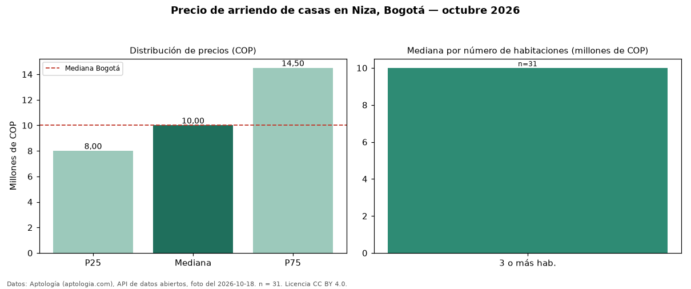

Precio de arriendo de casas en Niza, Bogotá — octubre 2026
En Niza (localidad de Suba), Bogotá, la mediana de canon mensual de casas es COP 10 millones, según 31 avisos vigentes. La mediana prácticamente coincide con la de Bogotá para casas (COP 10 millones; diferencia de 0,0 %). Con la mediana de venta del mismo barrio (COP 1,40 mil millones), el arriendo anual equivale a 8,6 % del precio de venta: una aproximación gruesa a la rentabilidad bruta, porque compara medianas de ofertas distintas. El segmento con más oferta es el de 3 o más habitaciones (31 avisos, mediana COP 10 millones). 87 % de los avisos incluye parqueadero, y su mediana (COP 9.500.000) está 5 % por debajo de la general. Por mediana, es el puesto 17 de 26 barrios de Bogotá con al menos 30 avisos de casas en arriendo: en la franja media. La mitad central de los avisos va de COP 8.000.000 a COP 14.500.000 (razón 1,8), una dispersión moderada. Datos: Aptología (aptologia.com), API de datos abiertos, licencia CC BY 4.0 — https://www.aptologia.com/casas-en-arriendo/bogota/niza. Archivos: PDF de 2 páginas, CSV con las cifras y gráfica PNG.

| Avisos únicos | 31 |
|---|---|
| Percentil 25 | COP 8.000.000 |
| Mediana | COP 10.000.000 |
| Percentil 75 | COP 14.500.000 |
Fuente: avisos vigentes de portales inmobiliarios recopilados por Aptología, deduplicados (mínimo 30 avisos únicos por celda). Precios pedidos, no cerrados. Fecha: 2026-10-18.